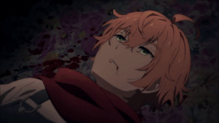

Personajes
Rachel Gardner
Rachel Gardner: es la protagonista principal junto a Isaac. También conocida como Ray. Despertó en una habitación extraña que parece ser el sótano de un edificio y a medida que sube los pisos, se encuentra con una persona diferente intentando matarla. Rachel Gardner es una niña de 13 años de baja estatura. Tiene el pelo rubio hasta las caderas, grandes ojos azules y un marco menudo. Ella viste una camisa con rayas horizontales blancas y negras, un cárdigan blanco suelto, pantalones cortos negros y botas negras torpe con hebillas de plata. Además, Rachel usa una gargantilla negra lisa y tiene una pequeña bolsa de mensajero negra con una solapa triangular. Sus ojos varían en saturación a través del juego, se muestra que son mucho más oscuros al final del Episodio 3 y durante el Episodio 4, con un gradiente visible de azul oscuro a azul claro.
Isaac Foster

Zack tiene una discapacidad mental, si era algo que tenía desde en algún momento de la vida es incierto. Esta discapacidad consiste en que él tiene un deseo de destruir cosas, incluso a los medios de matabilite. Sin embargo, se puede considerar que aunque Zack no es académicamente inteligente, tiene una gran inteligencia instintiva / de supervivencia, en la que unos y puede ser visto como inteligente. Que podría ser cómo él pudo sobrevivir como un niño, y hasta ahora. Y tal vez incluso se pueda describir como un animal en cierto modo. Zack también es extremadamente fuerte y bastante rápido, pudiendo correr a velocidades bastante increíbles, y en general es en realidad un personaje bastante poderoso, lo que equilibra el hecho de que no es tan inteligente. Zack también es MUY brutalmente honesto, ya que odia a las personas que mienten con una pasión ardiente, y nunca endulzan nada de lo que dice. Cuando era niño, Zack era aparentemente mucho más callado y reservado. Se demostró que nunca dijo una palabra específicamente en el mangahisror
Daniel Dickens
Daniel Dickens: alias Danny, es el terapeuta que le asignaron a Rachel antes de los sucesos del juego. Está obsesionado con los ojos ya que a él le faltaba uno y su madre lo rechazaba por eso; pero especialmente encuentra adoración por los ojos de Rachel y desea poseerlos. Es el residente del piso B5. Danny es un hombre con cabello verde oliva dividido por la mitad. Su ojo derecho no funciona muy bien y está oscuro sin reflejos de luz y usa lentes redondos. Danny también tiene un ojo falso que usará, que es una combinación de un ojo rojo y un ojo verde. Él usa un abrigo típico de médico con un chaleco marrón sobre una camisa azul oscuro y una corbata a rayas marrón, verde y rojo, y también usa pantalones y zapatos marrones. Cuando Danny era un niño pequeño, usaba un parche en el ojo derecho y un chaleco encima de una camisa y pantalones cortos.
Eduward Mason

Edward Mason: es el residente del piso B4. Está enamorado de Rachel porque según él son altamente compatibles y de igual edad. Le gusta especializarse en las tumbas y básicamente es un cementerio. Eddie es bastante bajo, se dice que está cerca de la estatura de Ray. Se lo ve con un pañuelo rojo alrededor del cuello, un traje de jumper con una camiseta blanca debajo, una máscara de calabaza que le cubre la cara, guantes marrones y botas marrones. También tiene la piel clara y se reveló que tenía el pelo rojo / escarlata en Episodio NG y también tiene ojos verdes y pecas. A menudo se lo ve llevando una pala por todas partes, ya que es sepulturero, además de proteger las tumbas.
Catherine Ward
Catherine Ward: es la residente del piso B3. Es una mujer sádica que expone a Zack y Ray a diferentes torturas.
Gray

Gray: residente del piso B2 y creador de todos los pisos. Es un Reverendo que quería "ser los ojos de Dios". A diferencia de los personajes anteriores, él muestra compasión por ambos protagonistas e incluso los ayuda en más de una ocasión (aunque también atentó contra el bienestar de Rachel). Dice que Zack era un ángel, y que Rachel fue quien lo humanizó.